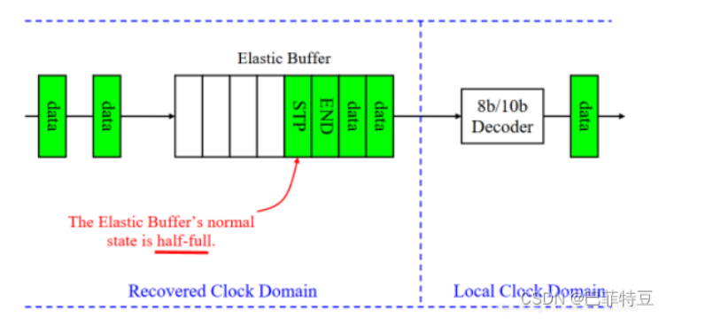
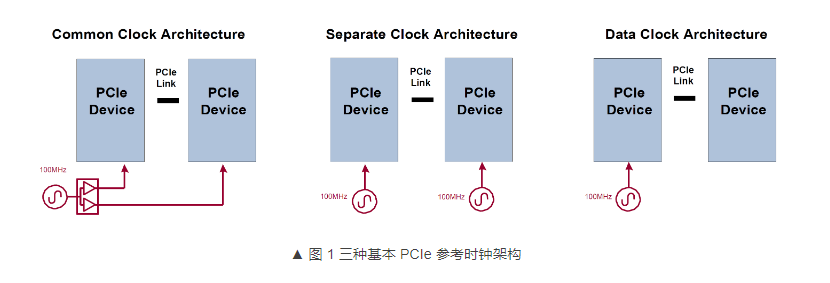
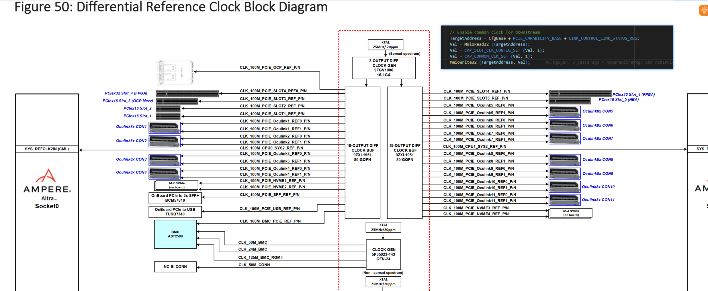
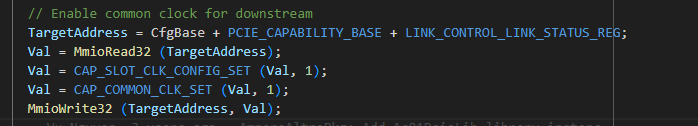

PCIe 时钟
[toc]
概述
参考时钟
为什么还需要100M时钟？
常我们会为PCIe设备需要100MHz参考时钟，不论是Root还是switch还是endpoint，这个时钟我们称为参考时钟，而没有称之为同步时钟。PCIe controller内部电路运行是需要时钟的，这个100MHz参考时钟即是提供给controller使用的时钟，和任何一个电路系统需要时钟是相同的概念。
但任何电路都需要时钟进行驱动，特别是总线信号，发送端需要时钟驱动打出信号，接收端则需要时钟采样信号，进而识别信息。这个就是参考时钟，一般是100M。
RC侧，从板子上的晶振，通过PLL 倍频个，得到100M时钟信号；
EP侧，从PCIe总线上得到，有两个pin脚，**REFCLK+和REFCLK-**两个引脚传输，通常是100 MHz的差分时钟信号。板卡也可以有自己的时钟发生器，自己的PLL，来产生时钟。
同步时钟
PCIe信号属于[差分信号]，也是同步传输方式，但是没有专门的同步时钟！
PCIe的时钟是嵌入到差分信号中的，PCIe总线在训练之初会完成一个bit lock，在这个过程中链路上会传输一段0和1间隔序列，即是连续的高低电平，就是用来给Receiver提取时钟的。Receiver提到到时钟后，才能够继续捕获一位一位的数据，也就是做bit的识别，再往后则是做多个bit的识别，即序列识别。
总线处于空闲状态时，也会持续传输时钟对齐码流，以防止一不留神丢了时钟，突然有数据过来的时候找不着北。
为啥有两个时钟
这里涉及到Receiver内部的工作机制，其中有一个部件叫做Elastic Buffer——弹性缓冲，这个部件的作用即是将按照CDR恢复时钟采样得到的数据继续向后面电路传输时，进行一个过渡。为什么需要过渡？因为后面电路所采用的时钟就不是CDR恢复的时钟了，而是Receiver使用100MHz参考时钟进行倍频而得到的时钟。这里存在2个时钟，数据需要从一个时钟域传输到另一个时钟域，虽然前后的时钟被处理到了同一个频率，但谁也不能保证他俩频率完全一模一样，相位一模一样。 简而言之，不同模块（buffer前后）使用的时钟不一样，可能存在相位差。
一个恢复时钟域，一个本地时钟域。

差异，可以使用SKP order set来进行填充。
通过抽插SKP，可以让这个队列处于平衡状态，也就实现了时钟同步。


安培家在link前设置了这两个寄存器

https://www.ti.com.cn/cn/lit/an/zhcade7/zhcade7.pdf?ts=1725331223430